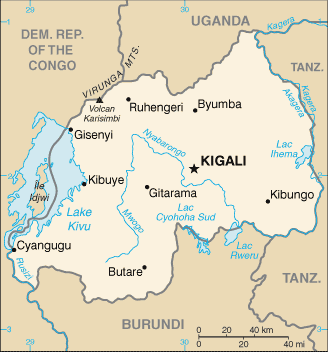
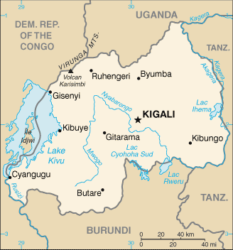

-
Introduction :: Rwanda
-
Background:In 1959, three years before independence from Belgium, the majority ethnic group, the Hutus, overthrew the ruling Tutsi king. Over the next several years, thousands of Tutsis were killed, and some 150,000 driven into exile in neighboring countries. The children of these exiles later formed a rebel group, the Rwandan Patriotic Front (RPF), and began a civil war in 1990. The war, along with several political and economic upheavals, exacerbated ethnic tensions, culminating in April 1994 in a state-orchestrated genocide, in which Rwandans killed up to a million of their fellow citizens, including approximately three-quarters of the Tutsi population. The genocide ended later that same year when the predominantly Tutsi RPF, operating out of Uganda and northern Rwanda, defeated the national army and Hutu militias, and established an RPF-led government of national unity. Approximately 2 million Hutu refugees - many fearing Tutsi retribution - fled to neighboring Burundi, Tanzania, Uganda, and former Zaire. Since then, most of the refugees have returned to Rwanda, but several thousand remained in the neighboring Democratic Republic of the Congo (DRC, the former Zaire) and formed an extremist insurgency bent on retaking Rwanda, much as the RPF did in 1990. Rwanda held its first local elections in 1999 and its first post-genocide presidential and legislative elections in 2003. Rwanda in 2009 staged a joint military operation with the Congolese Army in DRC to rout out the Hutu extremist insurgency there, and Kigali and Kinshasa restored diplomatic relations. Rwanda also joined the Commonwealth in late 2009. President Paul KAGAME won the presidential election in August 2017 after changing the constitution in 2016 to allow him to run for a third term.
-
Geography :: Rwanda
-
Location:Central Africa, east of the Democratic Republic of the Congo, north of BurundiGeographic coordinates:2 00 S, 30 00 EMap references:AfricaArea:total: 26,338 sq kmland: 24,668 sq kmwater: 1,670 sq kmcountry comparison to the world: 149Area - comparative:slightly smaller than MarylandLand boundaries:total: 930 kmborder countries (4): Burundi 315 km, Democratic Republic of the Congo 221 km, Tanzania 222 km, Uganda 172 kmCoastline:0 km (landlocked)Maritime claims:none (landlocked)Climate:temperate; two rainy seasons (February to April, November to January); mild in mountains with frost and snow possibleTerrain:mostly grassy uplands and hills; relief is mountainous with altitude declining from west to eastElevation:mean elevation: 1,598 melevation extremes: 950 m lowest point: Rusizi River4519 highest point: Volcan KarisimbiNatural resources:gold, cassiterite (tin ore), wolframite (tungsten ore), methane, hydropower, arable landLand use:agricultural land: 74.5% (2011 est.)arable land: 47% (2011 est.) / permanent crops: 10.1% (2011 est.) / permanent pasture: 17.4% (2011 est.)forest: 18% (2011 est.)other: 7.5% (2011 est.)Irrigated land:96 sq km (2012)Population distribution:one of Africa's most densely populated countries; large concentrations tend to be in the central regions and along the shore of Lake Kivu in the westNatural hazards:
periodic droughts; the volcanic Virunga Mountains are in the northwest along the border with Democratic Republic of the Congo
volcanism: Visoke (3,711 m), located on the border with the Democratic Republic of the Congo, is the country's only historically active volcano
Environment - current issues:deforestation results from uncontrolled cutting of trees for fuel; overgrazing; land degradation; soil erosion; a decline in soil fertility (soil exhaustion); wetland degradation and loss of biodiversity; widespread poachingEnvironment - international agreements:party to: Biodiversity, Climate Change, Climate Change-Kyoto Protocol, Desertification, Endangered Species, Hazardous Wastes, Ozone Layer Protection, Wetlandssigned, but not ratified: Law of the SeaGeography - note:landlocked; most of the country is savanna grassland with the population predominantly rural -
People and Society :: Rwanda
-
Population:12,187,400 (July 2018 est.)
note: estimates for this country explicitly take into account the effects of excess mortality due to AIDS; this can result in lower life expectancy, higher infant mortality, higher death rates, lower population growth rates, and changes in the distribution of population by age and sex than would otherwise be expected
country comparison to the world: 74Nationality:noun: Rwandan(s)adjective: RwandanEthnic groups:Hutu, Tutsi, Twa (Pygmy)Languages:Kinyarwanda (official, universal Bantu vernacular) 93.2%, French (official) (2002 est.)Religions:Protestant 49.5% (includes Adventist 11.8% and other Protestant 37.7%), Roman Catholic 43.7%, Muslim 2%, other 0.9% (includes Jehovah's Witness), none 2.5%, unspecified 1.3% (2012 est.)Demographic profile:Rwanda’s fertility rate declined sharply during the last decade, as a result of the government’s commitment to family planning, the increased use of contraceptives, and a downward trend in ideal family size. Increases in educational attainment, particularly among girls, and exposure to social media also contributed to the reduction in the birth rate. The average number of births per woman decreased from a 5.6 in 2005 to 4.5 in 2016. Despite these significant strides in reducing fertility, Rwanda’s birth rate remains very high and will continue to for an extended period of time because of its large population entering reproductive age. Because Rwanda is one of the most densely populated countries in Africa, its persistent high population growth and increasingly small agricultural landholdings will put additional strain on families’ ability to raise foodstuffs and access potable water. These conditions will also hinder the government’s efforts to reduce poverty and prevent environmental degradation.
The UNHCR recommended that effective 30 June 2013 countries invoke a cessation of refugee status for those Rwandans who fled their homeland between 1959 and 1998, including the 1994 genocide, on the grounds that the conditions that drove them to seek protection abroad no longer exist. The UNHCR’s decision is controversial because many Rwandan refugees still fear persecution if they return home, concerns that are supported by the number of Rwandans granted asylum since 1998 and by the number exempted from the cessation. Rwandan refugees can still seek an exemption or local integration, but host countries are anxious to send the refugees back to Rwanda and are likely to avoid options that enable them to stay. Conversely, Rwanda itself hosts almost 160,000 refugees as of 2017; virtually all of them fleeing conflict in neighboring Burundi and the Democratic Republic of the Congo.
Age structure:0-14 years: 40.98% (male 2,521,169 /female 2,473,055)15-24 years: 19.45% (male 1,187,249 /female 1,183,278)25-54 years: 32.93% (male 1,903,087 /female 2,109,839)55-64 years: 4.15% (male 225,273 /female 280,545)65 years and over: 2.49% (male 120,952 /female 182,953) (2018 est.)population pyramid: The World Factbook Field Image ModalAfrica :: Rwanda Print
The World Factbook Field Image ModalAfrica :: Rwanda Print Image DescriptionThis is the population pyramid for Rwanda. A population pyramid illustrates the age and sex structure of a country's population and may provide insights about political and social stability, as well as economic development. The population is distributed along the horizontal axis, with males shown on the left and females on the right. The male and female populations are broken down into 5-year age groups represented as horizontal bars along the vertical axis, with the youngest age groups at the bottom and the oldest at the top. The shape of the population pyramid gradually evolves over time based on fertility, mortality, and international migration trends.
Image DescriptionThis is the population pyramid for Rwanda. A population pyramid illustrates the age and sex structure of a country's population and may provide insights about political and social stability, as well as economic development. The population is distributed along the horizontal axis, with males shown on the left and females on the right. The male and female populations are broken down into 5-year age groups represented as horizontal bars along the vertical axis, with the youngest age groups at the bottom and the oldest at the top. The shape of the population pyramid gradually evolves over time based on fertility, mortality, and international migration trends.
For additional information, please see the entry for Population pyramid on the Definitions and Notes page under the References tab.Dependency ratios:total dependency ratio: 77.3 (2015 est.)youth dependency ratio: 72.4 (2015 est.)elderly dependency ratio: 5 (2015 est.)potential support ratio: 20.1 (2015 est.)Median age:total: 19.2 yearsmale: 18.5 yearsfemale: 20 years (2018 est.)country comparison to the world: 200Population growth rate:2.3% (2018 est.)country comparison to the world: 34Birth rate:29.8 births/1,000 population (2018 est.)country comparison to the world: 39Death rate:6.3 deaths/1,000 population (2018 est.)country comparison to the world: 154Net migration rate:0.2 migrant(s)/1,000 population (2017 est.)country comparison to the world: 68Population distribution:one of Africa's most densely populated countries; large concentrations tend to be in the central regions and along the shore of Lake Kivu in the westUrbanization:urban population: 17.2% of total population (2018)rate of urbanization: 2.86% annual rate of change (2015-20 est.)Major urban areas - population:1.058 million KIGALI (capital) (2018)Sex ratio:at birth: 1.03 male(s)/female (2017 est.)0-14 years: 1.02 male(s)/female (2017 est.)15-24 years: 1 male(s)/female (2017 est.)25-54 years: 1 male(s)/female (2017 est.)55-64 years: 0.88 male(s)/female (2017 est.)65 years and over: 0.7 male(s)/female (2017 est.)total population: 1 male(s)/female (2017 est.)Mother's mean age at first birth:23 years (2014/15 est.)note: median age at first birth among women 25-29
Maternal mortality rate:290 deaths/100,000 live births (2015 est.)country comparison to the world: 43Infant mortality rate:total: 29.1 deaths/1,000 live births (2018 est.)male: 32 deaths/1,000 live births (2018 est.)female: 26.2 deaths/1,000 live births (2018 est.)country comparison to the world: 64Life expectancy at birth:total population: 64.5 years (2018 est.)male: 62.6 years (2018 est.)female: 66.5 years (2018 est.)country comparison to the world: 188Total fertility rate:3.75 children born/woman (2018 est.)country comparison to the world: 41Contraceptive prevalence rate:53.2% (2014/15)Health expenditures:7.5% of GDP (2014)country comparison to the world: 67Physicians density:0.06 physicians/1,000 population (2015)Drinking water source:improved: urban: 86.6% of populationrural: 71.9% of populationtotal: 76.1% of populationunimproved: urban: 13.4% of populationrural: 28.1% of populationtotal: 23.9% of population (2015 est.)Sanitation facility access:improved: urban: 58.5% of population (2015 est.)rural: 62.9% of population (2015 est.)total: 61.6% of population (2015 est.)unimproved: urban: 41.5% of population (2015 est.)rural: 37.1% of population (2015 est.)total: 38.4% of population (2015 est.)HIV/AIDS - adult prevalence rate:2.7% (2017 est.)country comparison to the world: 21HIV/AIDS - people living with HIV/AIDS:220,000 (2017 est.)country comparison to the world: 27HIV/AIDS - deaths:3,100 (2017 est.)country comparison to the world: 39Major infectious diseases:degree of risk: very high (2016)food or waterborne diseases: bacterial diarrhea, hepatitis A, and typhoid fever (2016)vectorborne diseases: malaria and dengue fever (2016)animal contact diseases: rabies (2016)Obesity - adult prevalence rate:5.8% (2016)country comparison to the world: 174Children under the age of 5 years underweight:8.1% (2015)country comparison to the world: 70Education expenditures:3.5% of GDP (2016)country comparison to the world: 130Literacy:definition: age 15 and over can read and write (2015 est.)total population: 70.5% (2015 est.)male: 73.2% (2015 est.)female: 68% (2015 est.)School life expectancy (primary to tertiary education):total: 11 years (2013)male: 11 years (2013)female: 11 years (2013)Unemployment, youth ages 15-24:total: 1.9% (2014 est.)male: 1.4% (2014 est.)female: 2.5% (2014 est.)country comparison to the world: 167 -
Government :: Rwanda
-
Country name:conventional long form: Republic of Rwandaconventional short form: Rwandalocal long form: Republika y'u Rwandalocal short form: Rwandaformer: Ruanda, German East Africaetymology: the name translates as "domain" in the native Kinyarwanda languageGovernment type:presidential republicCapital:name: Kigaligeographic coordinates: 1 57 S, 30 03 Etime difference: UTC+2 (7 hours ahead of Washington, DC, during Standard Time)Administrative divisions:4 provinces (in French - provinces, singular - province; in Kinyarwanda - intara for singular and plural) and 1 city* (in French - ville; in Kinyarwanda - umujyi); Est (Eastern), Kigali*, Nord (Northern), Ouest (Western), Sud (Southern)Independence:1 July 1962 (from Belgium-administered UN trusteeship)National holiday:Independence Day, 1 July (1962)Constitution:history: several previous; latest adopted by referendum 26 May 2003, effective 4 June 2003 (2017)amendments: proposed by the president of the republic (with Council of Ministers approval) or by two-thirds majority support of both houses of Parliament; passage requires at least three-quarters majority vote in both houses; changes to constitutional articles on national sovereignty, the presidential term, the form and system of government, and political pluralism also require approval in a referendum; amended 2008, 2010, 2015 (2017)Legal system:mixed legal system of civil law, based on German and Belgian models, and customary law; judicial review of legislative acts in the Supreme CourtInternational law organization participation:has not submitted an ICJ jurisdiction declaration; non-party state to the ICCtCitizenship:citizenship by birth: nocitizenship by descent only: the father must be a citizen of Rwanda; if the father is stateless or unknown, the mother must be a citizendual citizenship recognized: noresidency requirement for naturalization: 10 yearsSuffrage:18 years of age; universalJudicial branch:highest courts: Supreme Court (consists of the chief and deputy chief justices and 15 judges; normally organized into 3-judge panels); High Court (consists of the court president, vice president, and a minimum of 24 judges and organized into 5 chambers)judge selection and term of office: Supreme Court judges nominated by the president after consultation with the Cabinet and the Superior Council of the Judiciary (SCJ), a 27-member body of judges, other judicial officials, and legal professionals) and approved by the Senate; chief and deputy chief justices appointed for 8-year nonrenewable terms; tenure of judges NA; High Court president and vice president appointed by the president of the republic upon approval by the Senate; judges appointed by the Supreme Court chief justice upon approval of the SCJ; judge tenure NAsubordinate courts: High Court of the Republic; commercial courts including the High Commercial Court; intermediate courts; primary courts; and military specialized courts
Executive branch:chief of state: President Paul KAGAME (since 22 April 2000)head of government: Prime Minister Edouard NGIRENTE (since 30 August 2017)cabinet: Council of Ministers appointed by the presidentelections/appointments: president directly elected by simple majority vote for a 5-year term (eligible for a second term); note - a constitutional amendment approved in December 2016 reduced the presidential term from 7 to 5 years but included an exception that allowed President KAGAME to serve another 7-year term in 2017, potentially followed by two additional 5-year terms; election last held on 4 August 2017 (next to be held in August 2024); prime minister appointed by the presidentelection results: Paul KAGAME reelected president; Paul KAGAME (RPF) 98.8%, Philippe MPAYIMANA (independent) 0.7%, Frank HABINEZA (DGPR)0.5%Legislative branch:description: bicameral Parliament consists of:
Senate or Senat (26 seats; 12 members indirectly elected by local councils, 8 appointed by the president, 4 appointed by the Political Organizations Forum - a body of registered political parties, and 2 selected by institutions of higher learning; members serve 8-year terms)
Chamber of Deputies or Chambre des Deputes (80 seats; 53 members directly elected by proportional representation vote, 24 women selected by special interest groups, and 3 selected by youth and disability organizations; members serve 5-year terms)elections:
Senate - last held on 26-27 September 2011 (next to be held in 2019)
Chamber of Deputies - last held on 16-18 September 2013 (next to be held on 3 September 2018)election results:
Chamber of Deputies - percent of vote by party - Rwandan Patriotic Front Coalition 76.2%, PSD 13%, PL 9.3%, other 1.5%; seats by party - Rwandan Patriotic Front Coalition 41, PSD 7, PL 5, 27 indirectly elected membersPolitical parties and leaders:Democratic Green Party of Rwanda or DGPR [Frank HABINEZA]
Liberal Party or PL [Donatille MUKABALISA]
Party for Progress and Concord or PPC [Dr. Alivera MUKABARAMBA]
Party Imberakuri or PS-Imberakuri [Christine MUKABUNANI]
Rwandan Patriotic Front or RPF [Paul KAGAME]
Rwandan Patriotic Front Coalition (includes RPF, PPC) [Paul KAGAME]
Social Democratic Party or PSD [Vincent BIRUTA]International organization participation:ACP, AfDB, AU, C, CEPGL, COMESA, EAC, EADB, FAO, G-77, IAEA, IBRD, ICAO, ICRM, IDA, IFAD, IFC, IFRCS, ILO, IMF, Interpol, IOC, IOM, IPU, ISO, ITSO, ITU, ITUC (NGOs), MIGA, MINUSMA, NAM, OIF, OPCW, PCA, UN, UNAMID, UNCTAD, UNESCO, UNHCR, UNIDO, UNISFA, UNMISS, UNWTO, UPU, WCO, WHO, WIPO, WMO, WTODiplomatic representation in the US:chief of mission: Ambassador Mathilde MUKANTABANA (since 18 July 2013)chancery: 1875 Connecticut Avenue, NW, Suite 418, Washington, DC, 20009telephone: [1] (202) 232-2882FAX: [1] (202) 232-4544Diplomatic representation from the US:chief of mission: Ambassador Peter H. VROOMAN (since 5 April 2018)embassy: 2657 Avenue de la Gendarmerie, Kigalimailing address: B.P. 28, Kigalitelephone: [250] 252 596-400FAX: [250] 252 580 325Flag description:three horizontal bands of sky blue (top, double width), yellow, and green, with a golden sun with 24 rays near the fly end of the blue band; blue represents happiness and peace, yellow economic development and mineral wealth, green hope of prosperity and natural resources; the sun symbolizes unity, as well as enlightenment and transparency from ignoranceNational symbol(s):traditional woven basket with peaked lid; national colors: blue, yellow, greenNational anthem:name: "Rwanda nziza" (Rwanda, Our Beautiful Country)lyrics/music: Faustin MURIGO/Jean-Bosco HASHAKAIMANAnote: adopted 2001
-
Economy :: Rwanda
-
Economy - overview:
Rwanda is a rural, agrarian country with agriculture accounting for about 63% of export earnings, and with some mineral and agro-processing. Population density is high but, with the exception of the capital Kigali, is not concentrated in large cities – its 12 million people are spread out on a small amount of land (smaller than the state of Maryland). Tourism, minerals, coffee, and tea are Rwanda's main sources of foreign exchange. Despite Rwanda's fertile ecosystem, food production often does not keep pace with demand, requiring food imports. Energy shortages, instability in neighboring states, and lack of adequate transportation linkages to other countries continue to handicap private sector growth.
The 1994 genocide decimated Rwanda's fragile economic base, severely impoverished the population, particularly women, and temporarily stalled the country's ability to attract private and external investment. However, Rwanda has made substantial progress in stabilizing and rehabilitating its economy well beyond pre-1994 levels. GDP has rebounded with an average annual growth of 6%-8% since 2003 and inflation has been reduced to single digits. In 2015, 39% of the population lived below the poverty line, according to government statistics, compared to 57% in 2006.
The government has embraced an expansionary fiscal policy to reduce poverty by improving education, infrastructure, and foreign and domestic investment. Rwanda consistently ranks well for ease of doing business and transparency.
The Rwandan Government is seeking to become a regional leader in information and communication technologies and aims to reach middle-income status by 2020 by leveraging the service industry. In 2012, Rwanda completed the first modern Special Economic Zone (SEZ) in Kigali. The SEZ seeks to attract investment in all sectors, but specifically in agribusiness, information and communications, trade and logistics, mining, and construction. In 2016, the government launched an online system to give investors information about public land and its suitability for agricultural development.
GDP (purchasing power parity):$24.68 billion (2017 est.)$23.26 billion (2016 est.)$21.94 billion (2015 est.)note: data are in 2017 dollars
country comparison to the world: 142GDP (official exchange rate):$9.136 billion (2017 est.) (2017 est.)GDP - real growth rate:6.1% (2017 est.)6% (2016 est.)8.9% (2015 est.)country comparison to the world: 33GDP - per capita (PPP):$2,100 (2017 est.)$2,000 (2016 est.)$1,900 (2015 est.)note: data are in 2017 dollars
country comparison to the world: 208Gross national saving:12.5% of GDP (2017 est.)6.1% of GDP (2016 est.)7.5% of GDP (2015 est.)country comparison to the world: 147GDP - composition, by end use:household consumption: 75.9% (2017 est.)government consumption: 15.2% (2017 est.)investment in fixed capital: 22.9% (2017 est.)investment in inventories: 0.5% (2017 est.)exports of goods and services: 18.2% (2017 est.)imports of goods and services: -32.8% (2017 est.)GDP - composition, by sector of origin:agriculture: 30.9% (2017 est.)industry: 17.6% (2017 est.)services: 51.5% (2017 est.)Agriculture - products:coffee, tea, pyrethrum (insecticide made from chrysanthemums), bananas, beans, sorghum, potatoes; livestockIndustries:cement, agricultural products, small-scale beverages, soap, furniture, shoes, plastic goods, textiles, cigarettesIndustrial production growth rate:4.2% (2017 est.)country comparison to the world: 72Labor force:6.227 million (2017 est.)country comparison to the world: 72Labor force - by occupation:agriculture: 75.3%industry: 6.7%services: 18% (2012 est.)Unemployment rate:2.7% (2014 est.)country comparison to the world: 29Population below poverty line:39.1% (2015 est.)Distribution of family income - Gini index:50.4 (2013 est.)51.3 (2010 est.)country comparison to the world: 17Budget:revenues: 1.943 billion (2017 est.)expenditures: 2.337 billion (2017 est.)Taxes and other revenues:21.3% (of GDP) (2017 est.)country comparison to the world: 142Budget surplus (+) or deficit (-):-4.3% (of GDP) (2017 est.)country comparison to the world: 162Public debt:40.5% of GDP (2017 est.)37.3% of GDP (2016 est.)country comparison to the world: 125Fiscal year:calendar yearInflation rate (consumer prices):4.8% (2017 est.)5.7% (2016 est.)country comparison to the world: 170Central bank discount rate:7.75% (31 December 2010)11.25% (31 December 2008)country comparison to the world: 40Commercial bank prime lending rate:17.17% (31 December 2017 est.)17.29% (31 December 2016 est.)country comparison to the world: 26Stock of narrow money:$963.9 million (31 December 2017 est.)$895 million (31 December 2016 est.)country comparison to the world: 159Stock of broad money:$963.9 million (31 December 2017 est.)$895 million (31 December 2016 est.)country comparison to the world: 164Stock of domestic credit:$1.861 billion (31 December 2017 est.)$1.614 billion (31 December 2016 est.)country comparison to the world: 154Current account balance:-$622 million (2017 est.)-$1.336 billion (2016 est.)country comparison to the world: 124Exports:$1.05 billion (2017 est.)$745 million (2016 est.)country comparison to the world: 158Exports - partners:UAE 38.3%, Kenya 15.1%, Switzerland 9.9%, Democratic Republic of the Congo 9.5%, US 4.9%, Singapore 4.5% (2017)Exports - commodities:coffee, tea, hides, tin oreImports:$1.922 billion (2017 est.)$2.036 billion (2016 est.)country comparison to the world: 167Imports - commodities:foodstuffs, machinery and equipment, steel, petroleum products, cement and construction materialImports - partners:China 20.4%, Uganda 11%, India 7.2%, Kenya 7.1%, Tanzania 5.3%, UAE 5.1% (2017)Reserves of foreign exchange and gold:$997.6 million (31 December 2017 est.)$1.104 billion (31 December 2016 est.)country comparison to the world: 132Debt - external:$3.258 billion (31 December 2017 est.)$2.611 billion (31 December 2016 est.)country comparison to the world: 141Stock of direct foreign investment - at home:$2.378 billion (31 December 2017 est.)$2.072 billion (31 December 2016 est.)country comparison to the world: 117Stock of direct foreign investment - abroad:$113.2 million (31 December 2017 est.)$26.8 million (31 December 2016 est.)country comparison to the world: 111Exchange rates:Rwandan francs (RWF) per US dollar -839.1 (2017 est.)787.25 (2016 est.)787.25 (2015 est.)720.54 (2014 est.)680.95 (2013 est.) -
Energy :: Rwanda
-
Electricity access:population without electricity: 9.3 million (2013)electrification - total population: 21% (2013)electrification - urban areas: 67% (2013)electrification - rural areas: 5% (2013)Electricity - production:525 million kWh (2016 est.)country comparison to the world: 164Electricity - consumption:527.3 million kWh (2016 est.)country comparison to the world: 169Electricity - exports:4 million kWh (2015 est.)country comparison to the world: 92Electricity - imports:42 million kWh (2016 est.)country comparison to the world: 108Electricity - installed generating capacity:191,000 kW (2016 est.)country comparison to the world: 166Electricity - from fossil fuels:42% of total installed capacity (2016 est.)country comparison to the world: 164Electricity - from nuclear fuels:0% of total installed capacity (2017 est.)country comparison to the world: 170Electricity - from hydroelectric plants:51% of total installed capacity (2017 est.)country comparison to the world: 37Electricity - from other renewable sources:7% of total installed capacity (2017 est.)country comparison to the world: 96Crude oil - production:0 bbl/day (2017 est.)country comparison to the world: 188Crude oil - exports:0 bbl/day (2015 est.)country comparison to the world: 182Crude oil - imports:0 bbl/day (2015 est.)country comparison to the world: 184Crude oil - proved reserves:0 bbl (1 January 2018 est.)country comparison to the world: 184Refined petroleum products - production:0 bbl/day (2015 est.)country comparison to the world: 191Refined petroleum products - consumption:6,700 bbl/day (2016 est.)country comparison to the world: 167Refined petroleum products - exports:0 bbl/day (2015 est.)country comparison to the world: 192Refined petroleum products - imports:6,628 bbl/day (2015 est.)country comparison to the world: 162Natural gas - production:0 cu m (2017 est.)country comparison to the world: 186Natural gas - consumption:0 cu m (2017 est.)country comparison to the world: 188Natural gas - exports:0 cu m (2017 est.)country comparison to the world: 171Natural gas - imports:0 cu m (2017 est.)country comparison to the world: 177Natural gas - proved reserves:56.63 billion cu m (1 January 2018 est.)country comparison to the world: 61Carbon dioxide emissions from consumption of energy:985,600 Mt (2017 est.)country comparison to the world: 169
-
Communications :: Rwanda
-
Telephones - fixed lines:total subscriptions: 12,333 (2017 est.)subscriptions per 100 inhabitants: less than 1 (December 2017 est.) (2017 est.)country comparison to the world: 191Telephones - mobile cellular:total subscriptions: 8,819,217 (2017 est.)subscriptions per 100 inhabitants: 74 (2017 est.)country comparison to the world: 89Telephone system:general assessment: small, inadequate telephone system primarily serves business, education, and government (2017)domestic: the capital, Kigali, is connected to provincial centers by microwave radio relay and, recently, by cellular telephone service; much of the network depends on wire and HF radiotelephone; combined fixed-line and mobile-cellular telephone density has increased and now exceeds 70 telephones per 100 persons (2017)international: country code - 250; international connections employ microwave radio relay to neighboring countries and satellite communications to more distant countries; satellite earth stations - 1 Intelsat (Indian Ocean) in Kigali (includes telex and telefax service) (2017)Broadcast media:13 TV stations; 35 radio stations registered, including international broadcasters, government owns most popular TV and radio stations; regional satellite-based TV services available (2016)Internet country code:.rwInternet users:total: 3,724,678 (Dec 2017 est.)percent of population: 29.8% (Dec 2017 est.)country comparison to the world: 90Broadband - fixed subscriptions:total: 21,780 (2017 est.)subscriptions per 100 inhabitants: less than 1 (2017 est.)country comparison to the world: 150
-
Transportation :: Rwanda
-
National air transport system:number of registered air carriers: 1 (2015)inventory of registered aircraft operated by air carriers: 9 (2015)annual passenger traffic on registered air carriers: 645,815 (2015)annual freight traffic on registered air carriers: 21,382,897 mt-km (2015)Civil aircraft registration country code prefix:9XR (2016)Airports:7 (2013)country comparison to the world: 170Airports - with paved runways:total: 4 (2017)over 3,047 m: 1 (2017)914 to 1,523 m: 2 (2017)under 914 m: 1 (2017)Airports - with unpaved runways:total: 3 (2013)914 to 1,523 m: 2 (2013)under 914 m: 1 (2013)Roadways:total: 4,700 km (2012)paved: 1,207 km (2012)unpaved: 3,493 km (2012)country comparison to the world: 152Waterways:(Lac Kivu navigable by shallow-draft barges and native craft) (2011)Ports and terminals:lake port(s): Cyangugu, Gisenyi, Kibuye (Lake Kivu)
-
Military and Security :: Rwanda
-
Military expenditures:1.21% of GDP (2016)1.25% of GDP (2015)1.13% of GDP (2014)1.08% of GDP (2013)1.09% of GDP (2012)country comparison to the world: 98Military branches:Rwanda Defense Force (RDF): Rwanda Army (Rwanda Land Force), Rwanda Air Force (Force Aerienne Rwandaise, FAR) (2013)Military service age and obligation:18 years of age for voluntary military service; no conscription; Rwandan citizenship is required, as is a 9th-grade education for enlisted recruits and an A-level certificate for officer candidates; enlistment is either as contract (5-years, renewable twice) or career; retirement (for officers and senior NCOs) after 20 years of service or at 40-60 years of age (2012)
-
Transnational Issues :: Rwanda
-
Disputes - international:Burundi and Rwanda dispute two sq km (0.8 sq mi) of Sabanerwa, a farmed area in the Rukurazi Valley where the Akanyaru/Kanyaru River shifted its course southward after heavy rains in 1965fighting among ethnic groups - loosely associated political rebels, armed gangs, and various government forces in Great Lakes region transcending the boundaries of Burundi, Democratic Republic of the Congo (DROC), Rwanda, and Uganda - abated substantially from a decade ago due largely to UN peacekeeping, international mediation, and efforts by local governments to create civil societiesnonetheless, 57,000 Rwandan refugees still reside in 21 African states, including Zambia, Gabon, and 20,000 who fled to Burundi in 2005 and 2006 to escape drought and recriminations from traditional courts investigating the 1994 massacresthe 2005 DROC and Rwanda border verification mechanism to stem rebel actions on both sides of the border remains in placeRefugees and internally displaced persons:refugees (country of origin): 80,755 (Democratic Republic of the Congo), 69,089 (Burundi) (2018)
Africa ::
Rwanda